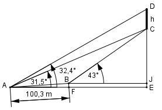

Aufgabe 206 Um die Höhe h einer Skulptur an der Fassade eines Turms zu bestimmen, werden von einer 100,3 m langen Standlinie AB aus, die in einer Vertikal- ebene mit der Figur liegt und von A nach B um 0,2% steigt, Peilungen vorgenommen. Zum Fuß der Skulptur beträgt der Höhenwinkel von A aus 31,5°, von B aus 43°. Zum Kopf von A aus 32,4°. Welche Höhe h hat die Skulptur?

Die Strecke AB steigt um 0,2% von A nach B an. 0,2% entspricht einer Steigung von 0,2/100 = 0,002 = tan α --> α = 0,115° Im Dreieck AFB: BF sin α = ---- |*AB AB BF = AB * sin 0,115° = 100,3 m * 0,002 = 0,2 m AF cos α = ---- |*AB AB AF = AB * cos 0,115° = 100,3m * 0,9999 = 100,29 m Im Dreieck AEC: (rechter Winkel bei E) CE = CJ + BF AE = AF + FE CE CJ + BF tan 31,5° = ---- = --------- |*(AF + FE) AE AF + FE (AF + FE) * tan 31,5° = CJ + BF |-BF CJ = (AF + FE) * tan 31,5° - BF Im Dreieck BJC : CJ tan 43° = ---- |*FE FE CJ = FE * tan 43° Gleichgesetzt: (AF + FE) * tan 31,5° - BF = FE * tan 43° AF * tan 31,5° + FE * tan 31,5° - BF = = FE * tan 43° | -FE * tan 31,5° AF * tan 31,5° - BF = = FE * tan 43° - FE * tan 31,5° AF * tan 31,5° - BF = = FE * (tan 43° - tan 31,5°) |:(tan43°-tan31,5°) AF * tan 31,5° - BF FE = ----------------------- = (tan 43° - tan 31,5°) 100,29 m * 0,6128 – 0,2 m = ---------------------------- = 191,6 m 0,9325 – 0,6128 Eingesetzt: CJ = FE * tan 43° = 191,6 m * 0,9325 = 178,7 m Im Dreieck AED: CJ + BF + h tan 32,4° = --------------- |*(AF + FE) AF + FE (AF + FE) * tan 32,4° = CJ + BF + h |-CJ (AF + FE) * tan 32,4° - CJ = BF + h | -BF h = (AF + FE) * tan 32,4° - CJ – BF h = (100,29 m + 191,6 m)*0,6346 – 178,7 m – 0,2 m h = 6,3 m